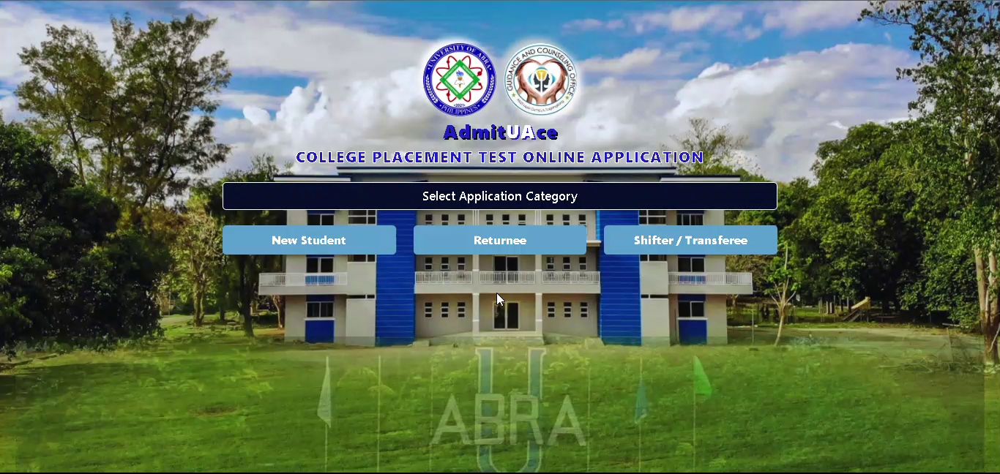
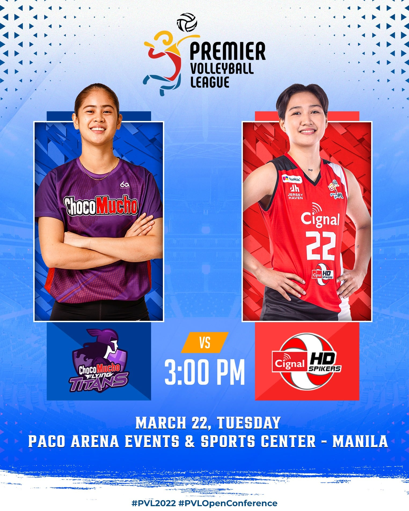
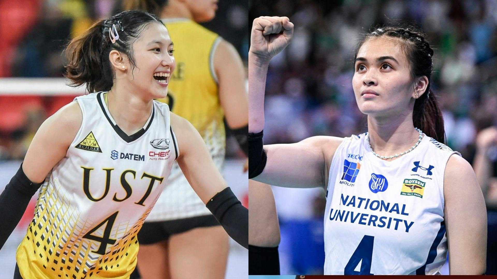
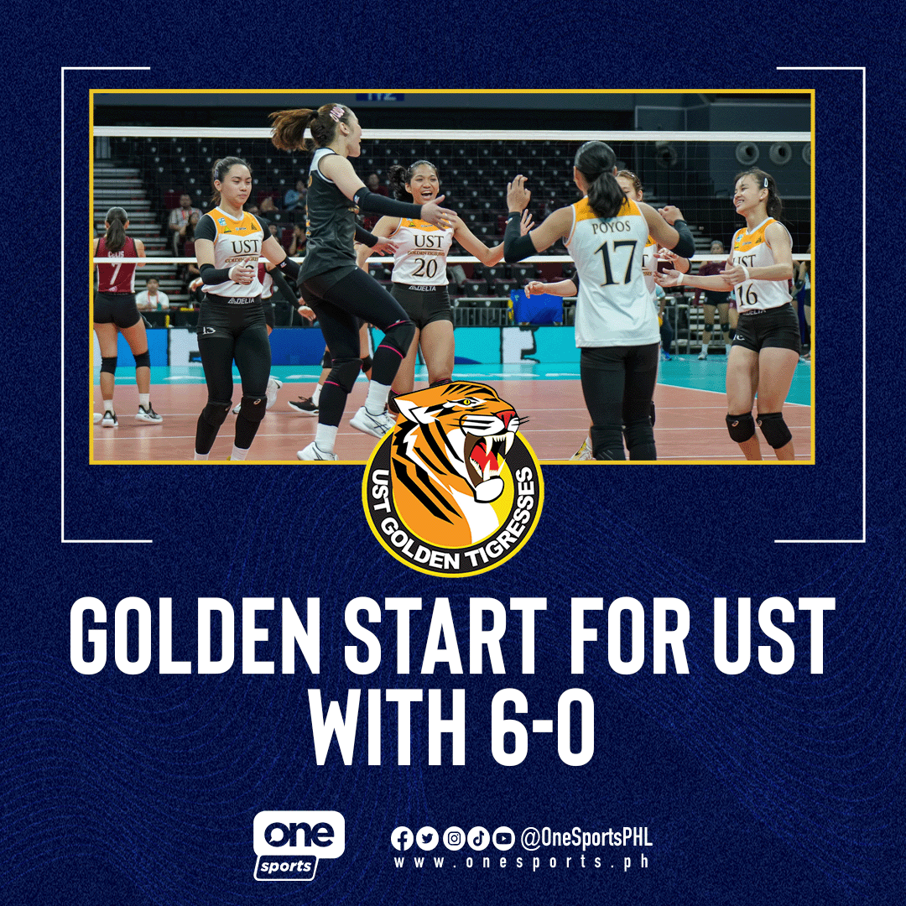
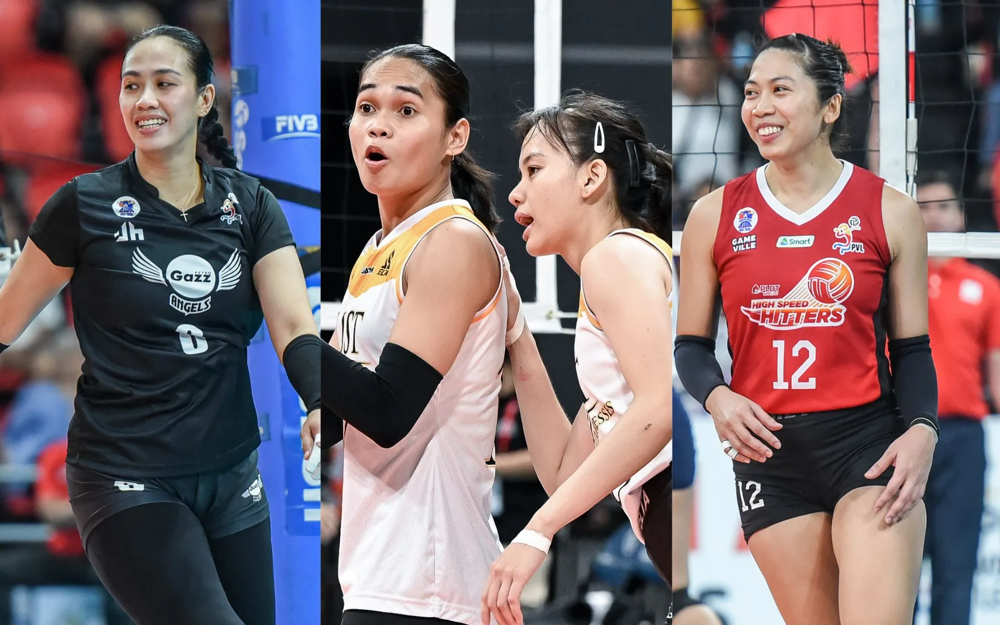

The web-based admission system is a beneficial solution for colleges and universities.
It provides an online portal for admissions, allowing applicants to easily apply for admission from any location.
THE ACTION IS HEATING UP IN THE TARAFLEX! 🔥 Buckle up for another PVL Thursday double-header with Farm Fresh and Petro Gazz squaring up first followed by the heavyweight clash of Choco Mucho and Cignal LIVE on One Sports, One Sports+, and the Pilipinas Live app.
#PVL2024 #TheHeartOfVolleyball
"Kung depensahan mo, lalaban ako!" 😄 UST Golden Tigresses' team captain-libero Detdet Pepito won’t back down from her bestie, NU Lady Bulldogs’ Bella Belen's challenge, as she funnily reacts to her comment in a previous post-game press conference. | via Xander Lauren Cipriano/One Sports Digital
#UAAPonOneSports #FuelingTheFuture
'TWAS A GOLDEN RUN! 🐯 The momentum is on the UST Golden Tigresses side as they remain flawless with a 6-0 record. The last time that the España-based squad got this hot start was back in UAAP Season 73, led by Rhea Dimaculangan and Aiza Maizo-Pontillas.
#UAAPSeason86 #UAAPonOneSports #FuelingTheFuture<
No room for complacency. The UST Golden Tigresses are keeping their eyes on the prize, while also drawing strength from the stellar start last made by the Aiza Maizo-Pontillas and Rhea Dimaculangan-led squad in Season 73.
